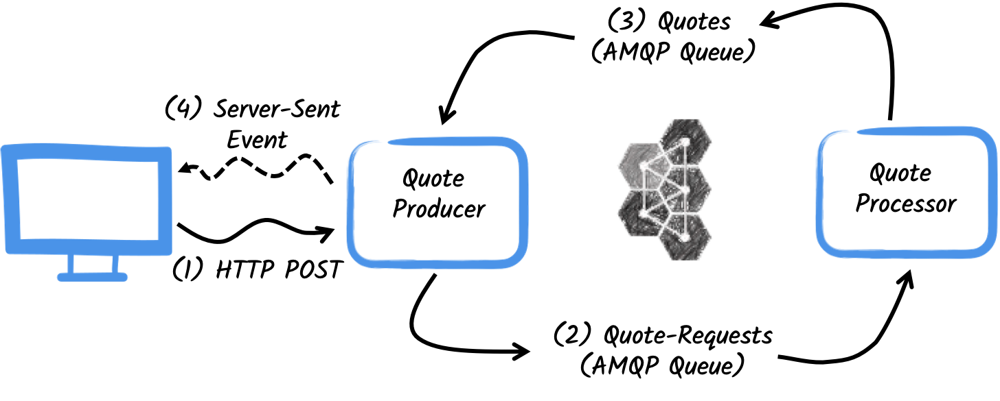
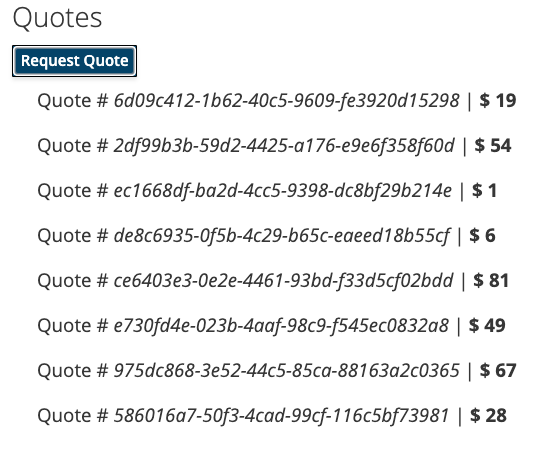

Getting Started to SmallRye Reactive Messaging with AMQP 1.0
This guide demonstrates how your Quarkus application can utilize SmallRye Reactive Messaging to interact with AMQP 1.0.
| If you want to use RabbitMQ, you should use the SmallRye Reactive Messaging RabbitMQ extension. Alternatively, if you want to use RabbitMQ with AMQP 1.0 you need to enable the AMQP 1.0 plugin in the RabbitMQ broker; check the connecting to RabbitMQ documentation. |
Pré-requisitos
Para concluir este guia, você precisa:
-
Cerca de 15 minutos
-
Um IDE
-
JDK 11+ instalado com 'JAVA_HOME' configurado adequadamente
-
Apache Maven 3.8.6
-
Docker e Docker Compose ou Podman e Docker Compose
-
Opcionalmente, o Quarkus CLI se você quiser usá-lo
-
Opcionalmente, Mandrel ou GraalVM instalado e configurado apropriadamente se você quiser criar um executável nativo (ou Docker se você usar uma compilação de contêiner nativo)
Arquitetura
In this guide, we are going to develop two applications communicating with an AMQP broker. We will use Artemis, but you can use any AMQP 1.0 broker. The first application sends a quote request to an AMQP queue and consumes messages from the quote queue. The second application receives the quote request and sends a quote back.

The first application, the producer, will let the user request some quotes over an HTTP endpoint.
For each quote request, a random identifier is generated and returned to the user, to put the quote request on pending.
At the same time the generated request id is sent over the quote-requests queue.

The second application, the processor, in turn, will read from the quote-requests queue put a random price to the quote, and send it to a queue named quotes.
Por fim, o site producer lerá as cotações e as enviará ao navegador usando eventos enviados pelo servidor. Portanto, o usuário verá o preço da cotação pendente para o preço recebido em tempo real.
Solução
Recomendamos que siga as instruções nas próximas seções e crie aplicativos passo a passo. No entanto, você pode ir direto para o exemplo concluído.
Clone o repositório Git: git clone https://github.com/quarkusio/quarkus-quickstarts.git, ou baixe um arquivo.
The solution is located in the amqp-quickstart directory.
Criando o projeto Maven
Em primeiro lugar, temos de criar dois projetos: o producer e o processor.
Para criar o projeto producer, em um terminal, execute:
Este comando cria a estrutura do projeto e seleciona as duas extensões Quarkus que vamos utilizar:
-
RESTEasy Reactive e o suporte a Jackson para lidar com as requisições JSON
-
The Reactive Messaging AMQP connector
Para criar o projeto do processor, a partir do mesmo diretório, execute:
Nesse momento, você deverá ter a seguinte estrutura:
.
├── amqp-quickstart-processor
│ ├── README.md
│ ├── mvnw
│ ├── mvnw.cmd
│ ├── pom.xml
│ └── src
│ └── main
│ ├── docker
│ ├── java
│ └── resources
│ └── application.properties
└── amqp-quickstart-producer
├── README.md
├── mvnw
├── mvnw.cmd
├── pom.xml
└── src
└── main
├── docker
├── java
└── resources
└── application.propertiesAbra os dois projetos no seu IDE preferido.
O objeto Quote
The Quote class will be used in both producer and processor projects.
For the sake of simplicity we will duplicate the class.
In both projects, create the src/main/java/org/acme/amqp/model/Quote.java file, with the following content:
package org.acme.amqp.model;
import io.quarkus.runtime.annotations.RegisterForReflection;
@RegisterForReflection
public class Quote {
public String id;
public int price;
/**
* Default constructor required for Jackson serializer
*/
public Quote() { }
public Quote(String id, int price) {
this.id = id;
this.price = price;
}
@Override
public String toString() {
return "Quote{" +
"id='" + id + '\'' +
", price=" + price +
'}';
}
}JSON representation of Quote objects will be used in messages sent to the AMQP queues
and also in the server-sent events sent to browser clients.
Quarkus has built-in capabilities to deal with JSON AMQP messages.
|
@RegisterForReflection
A anotação |
Enviando pedido de cotação
Inside the producer project locate the generated src/main/java/org/acme/amqp/producer/QuotesResource.java file, and update the content to be:
package org.acme.amqp.producer;
import java.util.UUID;
import javax.ws.rs.GET;
import javax.ws.rs.POST;
import javax.ws.rs.Path;
import javax.ws.rs.Produces;
import javax.ws.rs.core.MediaType;
import org.acme.amqp.model.Quote;
import org.eclipse.microprofile.reactive.messaging.Channel;
import org.eclipse.microprofile.reactive.messaging.Emitter;
import io.smallrye.mutiny.Multi;
@Path("/quotes")
public class QuotesResource {
@Channel("quote-requests") Emitter<String> quoteRequestEmitter; (1)
/**
* Endpoint to generate a new quote request id and send it to "quote-requests" AMQP queue using the emitter.
*/
@POST
@Path("/request")
@Produces(MediaType.TEXT_PLAIN)
public String createRequest() {
UUID uuid = UUID.randomUUID();
quoteRequestEmitter.send(uuid.toString()); (2)
return uuid.toString();
}
}| 1 | Injete um serviço de mensagens reativas Emitter para enviar mensagens para o canal quote-requests. |
| 2 | On a post request, generate a random UUID and send it to the AMQP queue using the emitter. |
The quote-requests channel is going to be managed as a AMQP queue, as that’s the only connector on the classpath.
If not indicated otherwise, like in this example, Quarkus uses the channel name as AMQP queue name.
So, in this example, the application sends messages to the quote-requests queue.
| Quando você tem vários conectores, você precisaria indicar qual conector deseja usar na configuração do aplicativo. |
Processamento de pedidos de cotação
Now let’s consume the quote request and give out a price.
Inside the processor project, locate the src/main/java/org/acme/amqp/processor/QuoteProcessor.java file and add the following:
package org.acme.amqp.processor;
import java.util.Random;
import javax.enterprise.context.ApplicationScoped;
import org.acme.amqp.model.Quote;
import org.eclipse.microprofile.reactive.messaging.Incoming;
import org.eclipse.microprofile.reactive.messaging.Outgoing;
import io.smallrye.reactive.messaging.annotations.Blocking;
/**
* A bean consuming data from the "request" AMQP queue and giving out a random quote.
* The result is pushed to the "quotes" AMQP queue.
*/
@ApplicationScoped
public class QuoteProcessor {
private Random random = new Random();
@Incoming("requests") (1)
@Outgoing("quotes") (2)
@Blocking (3)
public Quote process(String quoteRequest) throws InterruptedException {
// simulate some hard-working task
Thread.sleep(200);
return new Quote(quoteRequest, random.nextInt(100));
}
}| 1 | Indica que o método consome os itens do canal quote-requests |
| 2 | Indica que os objetos devolvidos pelo método são enviados para o canal quotes |
| 3 | Indica que o processamento está a bloquear e não pode ser executado na thread do chamador. |
The process method is called for every AMQP message from the quote-requests queue, and will send a Quote object to the quotes queue.
Because we want to consume messages from the quotes-requests queue into the requests channel, we need to configure this association.
Open the src/main/resources/application.properties file and add:
mp.messaging.incoming.requests.address=quote-requestsThe configuration keys are structured as follows:
mp.messaging.[outgoing|incoming].{channel-name}.property=value
In our case, we want to configure the address attribute to indicate the name of the queue.
Recebendo cotações
Voltemos ao nosso projeto producer . Vamos modificar o QuotesResource para consumir cotações e vinculá-lo a um endpoint HTTP para enviar eventos aos clientes:
import io.smallrye.mutiny.Multi;
//...
@Channel("quotes") Multi<Quote> quotes; (1)
/**
* Endpoint retrieving the "quotes" queue and sending the items to a server sent event.
*/
@GET
@Produces(MediaType.SERVER_SENT_EVENTS) (2)
public Multi<Quote> stream() {
return quotes; (3)
}| 1 | Injecta o canal quotes utilizando o qualificador @Channel |
| 2 | Indica que o conteúdo é enviado utilizando Server Sent Events |
| 3 | Devolve o fluxo (Reactive Stream) |
A página HTML
Toque final, a página HTML que lê os preços convertidos utilizando SSE.
Criar no projeto producer o ficheiro src/main/resources/META-INF/resources/quotes.html, com o seguinte conteúdo:
<!DOCTYPE html> <html lang="en"> <head> <meta charset="UTF-8"> <title>Quotes</title>
<link rel="stylesheet" type="text/css"
href="https://cdnjs.cloudflare.com/ajax/libs/patternfly/3.24.0/css/patternfly.min.css">
<link rel="stylesheet" type="text/css"
href="https://cdnjs.cloudflare.com/ajax/libs/patternfly/3.24.0/css/patternfly-additions.min.css">
</head>
<body>
<div class="container">
<div class="card">
<div class="card-body">
<h2 class="card-title">Quotes</h2>
<button class="btn btn-info" id="request-quote">Request Quote</button>
<div class="quotes"></div>
</div>
</div>
</div>
</body>
<script src="https://code.jquery.com/jquery-3.6.0.min.js"></script>
<script>
$("#request-quote").click((event) => {
fetch("/quotes/request", {method: "POST"})
.then(res => res.text())
.then(qid => {
var row = $(`<h4 class='col-md-12' id='${qid}'>Quote # <i>${qid}</i> | <strong>Pending</strong></h4>`);
$(".quotes").append(row);
});
});
var source = new EventSource("/quotes");
source.onmessage = (event) => {
var json = JSON.parse(event.data);
$(`#${json.id}`).html(function(index, html) {
return html.replace("Pending", `\$\xA0${json.price}`);
});
};
</script>
</html>Nada de espetacular aqui. A cada citação recebida, a página é atualizada.
Executando a aplicação
Você só precisa executar ambas as aplicações utilizando:
> mvn -f amqp-quickstart-producer quarkus:devE, em um terminal separado:
> mvn -f amqp-quickstart-processor quarkus:devQuarkus starts a AMQP broker automatically, configures the application and shares the broker instance between different applications. See Dev Services for AMQP for more details.
Abra http://localhost:8080/quotes.html no seu browser e peça algumas cotações clicando no botão.
Execução em modo JVM ou nativo
When not running in dev or test mode, you will need to start your AMQP broker.
You can follow the instructions from the Apache ActiveMQ Artemis website or create a docker-compose.yaml file with the following content:
version: '2'
services:
artemis:
image: quay.io/artemiscloud/activemq-artemis-broker:0.1.2
ports:
- "8161:8161"
- "61616:61616"
- "5672:5672"
environment:
AMQ_USER: quarkus
AMQ_PASSWORD: quarkus
networks:
- amqp-quickstart-network
producer:
image: quarkus-quickstarts/amqp-quickstart-producer:1.0-${QUARKUS_MODE:-jvm}
build:
context: amqp-quickstart-producer
dockerfile: src/main/docker/Dockerfile.${QUARKUS_MODE:-jvm}
environment:
AMQP_HOST: artemis
AMQP_PORT: 5672
ports:
- "8080:8080"
networks:
- amqp-quickstart-network
processor:
image: quarkus-quickstarts/amqp-quickstart-processor:1.0-${QUARKUS_MODE:-jvm}
build:
context: amqp-quickstart-processor
dockerfile: src/main/docker/Dockerfile.${QUARKUS_MODE:-jvm}
environment:
AMQP_HOST: artemis
AMQP_PORT: 5672
networks:
- amqp-quickstart-network
networks:
amqp-quickstart-network:
name: amqp-quickstartNote how the AMQP broker location is configured.
The amqp.host and amqp.port (AMQP_HOST and AMQP_PORT environment variables) properties configure location.
Primeiro, certifique-se de que parou as aplicações e construa ambas as aplicações no modo JVM com:
> mvn -f amqp-quickstart-producer clean package
> mvn -f amqp-quickstart-processor clean packageDepois de empacotado, execute docker compose up --build . A interface do usuário será exibida em http://localhost:8080/quotes.html
Para executar as suas aplicações como nativas, primeiro precisaremos construir os executáveis nativos:
> mvn -f amqp-quickstart-producer package -Pnative -Dquarkus.native.container-build=true
> mvn -f amqp-quickstart-processor package -Pnative -Dquarkus.native.container-build=trueO site -Dquarkus.native.container-build=true instrui o Quarkus a criar executáveis nativos do Linux de 64 bits, que podem ser executados dentro de contêineres. Em seguida, execute o sistema usando:
> export QUARKUS_MODE=native
> docker compose up --buildTal como anteriormente, a interface do usuário será exibida em http://localhost:8080/quotes.html
Indo mais longe
This guide has shown how you can interact with AMQP 1.0 using Quarkus. It utilizes SmallRye Reactive Messaging to build data streaming applications.
If you did the Kafka quickstart, you have realized that it’s the same code. The only difference is the connector configuration and the JSON mapping.